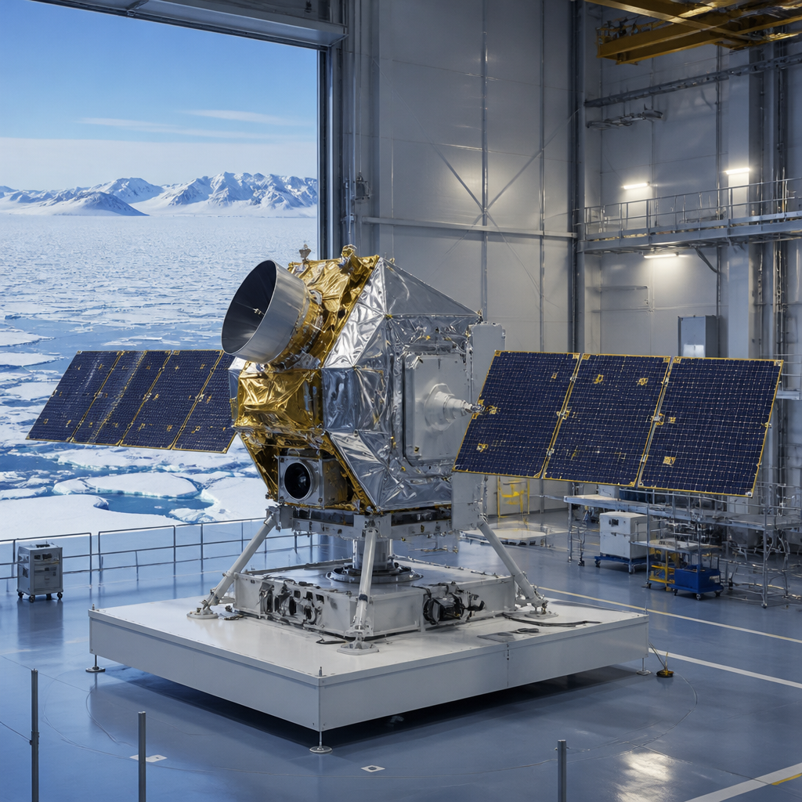
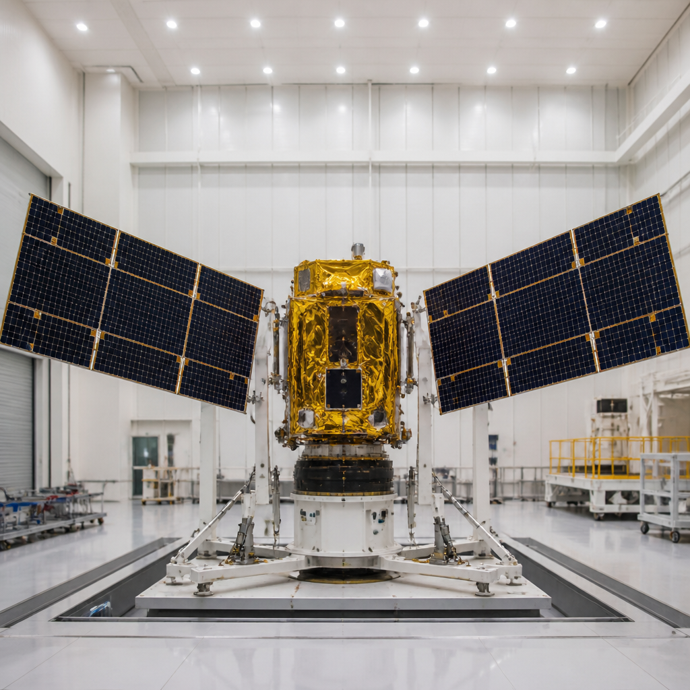
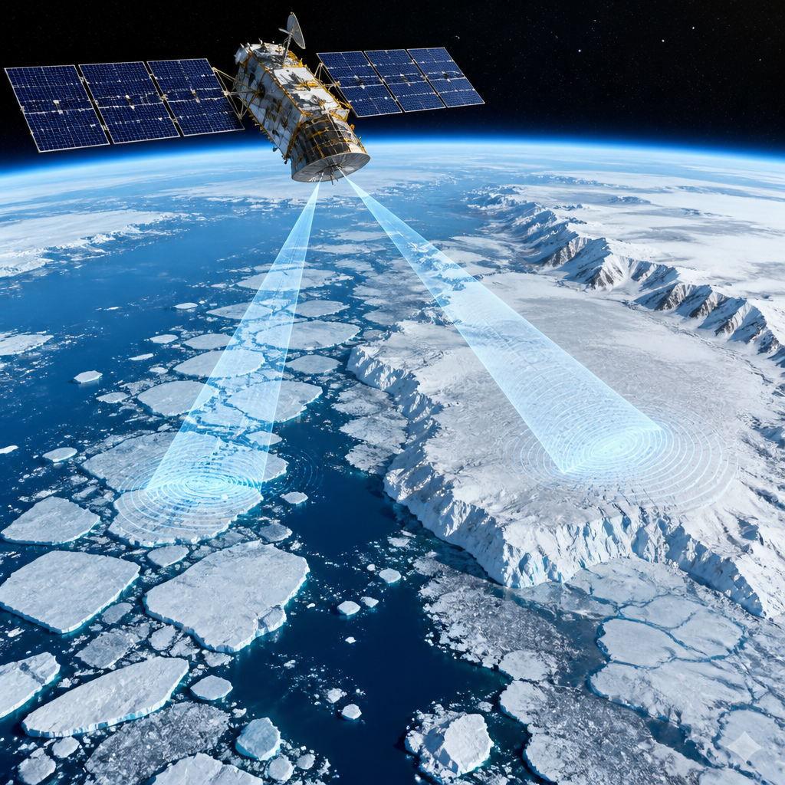

Il satellite europeo dedicato ai ghiacci polari ha provato l’apertura dei pannelli solari e il sistema di separazione dal razzo.
CRISTAL, il nuovo satellite europeo progettato per monitorare i ghiacci, ha concluso una fase importante del suo percorso verso il lancio. Dopo l’integrazione dei pannelli solari e il completamento dell’assemblaggio, il veicolo sta passando alle prove che dovranno dimostrare la sua capacità di affrontare il decollo e la vita in orbita.
A settembre, presso le strutture Airbus di Friedrichshafen, in Germania, gli ingegneri hanno terminato l’assemblaggio del satellite. Da quel momento il lavoro si è concentrato sui suoi sistemi: una serie di verifiche necessarie per controllare che componenti, meccanismi e procedure funzionino insieme come previsto.
Tra i test già svolti spicca la prima prova di apertura dei pannelli solari. Questi pannelli, una volta dispiegati, forniranno energia al satellite nello spazio. La verifica serve a controllare sia i meccanismi fisici di apertura sia le sequenze software che li comandano: due elementi che dovranno agire correttamente quando CRISTAL sarà in orbita.

Un’altra verifica è stata condotta con AVIO, il fornitore del servizio di lancio. CRISTAL è stato controllato sul suo adattatore di lancio, il componente che lo mantiene fissato al razzo. Non basta infatti che il satellite sia compatibile con questo elemento: occorre verificare anche il meccanismo che dovrà liberarlo dal razzo e consentirne l’immissione in orbita.
Parallelamente alle attività sul satellite, il progetto ha svolto una revisione intermedia dello stato di qualifica. La revisione ha esaminato lo stato di qualifica e verifica delle apparecchiature, degli strumenti e dei sottosistemi prima delle prove di qualifica sull’intero satellite. Secondo il responsabile del progetto CRISTAL dell’ESA, Kristof Gantois, i test sono stati superati con successo e costituiscono un passaggio verso la fase successiva.
Il satellite sarà trasferito da Friedrichshafen a una sede dell’Agenzia spaziale europea nei Paesi Bassi. Qui trascorrerà la maggior parte del prossimo anno sottoposto a rigorosi test ambientali. Lo scopo è verificare che possa resistere sia al lancio sia alle condizioni difficili dell’ambiente spaziale.
Il lancio è previsto tra la fine del 2027 e l’inizio del 2028. Quando raggiungerà l’orbita, CRISTAL dovrebbe diventare la prima missione di espansione Copernicus Sentinel a essere lanciata. Il suo nome è l’acronimo di Copernicus Polar Ice and Snow Topography Altimeter: una missione dedicata alla topografia, cioè alla misura della forma e dell’altezza, dei ghiacci e della neve polari.
A bordo ci saranno il primo altimetro radar a doppia frequenza e un radiometro a microonde. Un altimetro radar misura le distanze inviando segnali radar verso la superficie e analizzandone il ritorno; il radiometro a microonde rileva invece segnali nella banda delle microonde. Insieme, questi strumenti serviranno a misurare e monitorare i cambiamenti dello spessore del ghiaccio marino, della profondità della neve che lo ricopre e dell’elevazione delle calotte glaciali.

CRISTAL proseguirà per almeno i prossimi due decenni le serie di osservazioni radar dell’elevazione dei ghiacci e dei cambiamenti topografici, raccogliendo l’eredità di missioni precedenti, tra cui CryoSat dell’ESA. È inoltre previsto un satellite CRISTAL-B verso la fine della vita operativa di CRISTAL-A, con l’obiettivo di mantenere continue le osservazioni della missione.
Come missione operativa, CRISTAL fornirà dati utili alle attività marittime negli oceani polari, alle applicazioni legate alle acque costiere e interne e al monitoraggio della topografia oceanica. Le misure precise del ghiaccio, indicato come una delle parti più vulnerabili del sistema terrestre, contribuiranno anche a comprendere meglio i processi climatici e i loro effetti.
CRISTAL ha completato l’assemblaggio e ha superato le prime prove dei pannelli solari e dell’adattatore di lancio. La prossima grande fase sarà dedicata ai test ambientali nei Paesi Bassi. Il lancio è programmato tra la fine del 2027 e l’inizio del 2028.
Questo articolo l'hai letto sul blog di Meteo News Radar: un'app che ti mostra da dove vengono i numeri, invece di limitarsi a dartelo. E ogni mattina ne trovi uno nuovo come questo.